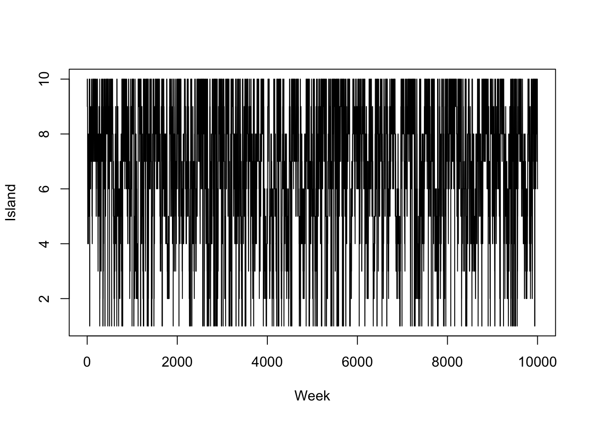
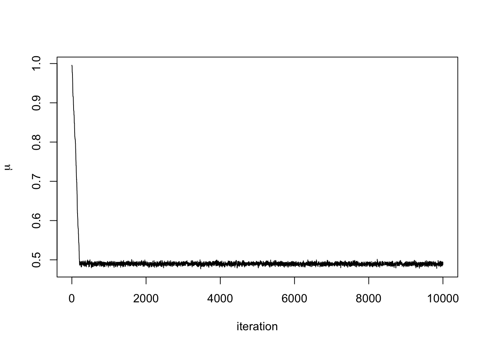
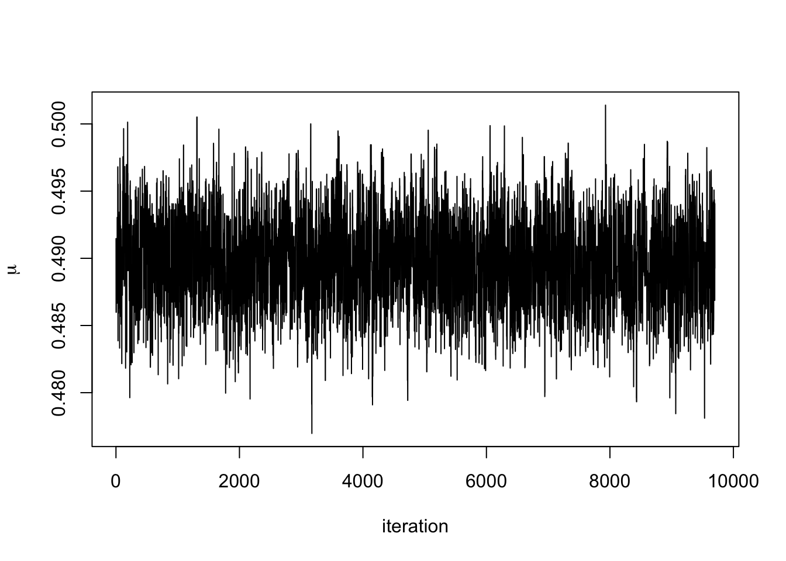
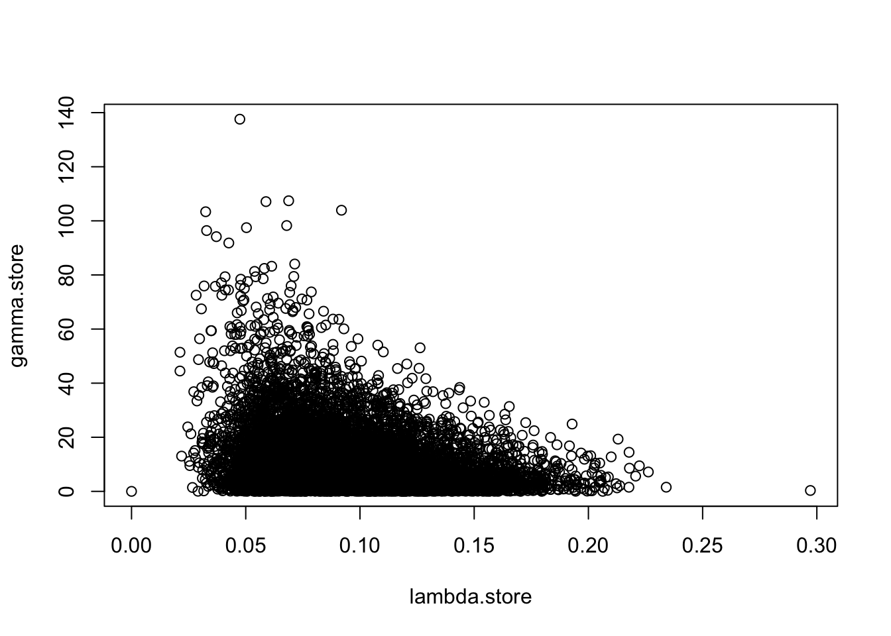

Chapter 5 Markov Chain Monte Carlo
Markov Chain Monte Carlo (MCMC) is a class of algorithms that produce samples from a probability distribution. These methods combine the idea of rejection sampling with the theory of Markov chains. Before we set out the theory of Markov chains, we’ll go through an example to show how MCMC works.
Example 5.1 (Adapted from Statistical Rethinking 9) Consider an eccentric King whose kingdom consists of a ring of 10 islands. Directly north is island one, the smallest island. Going clockwise around the archipelago, next is island two, which is twice the size of island one, then island three, which is three times as large as island one. Finally, island 10 is next to island one and ten times as large.
The King wanted to visit all of his islands, but spending time on each one according to its size. That is he should spend the most time on island ten and the least on island one. Being climate conscious, he also decided that flying from one side of the archipelago to the other was not allowed. Instead, he would only sail from one island to either of its neighbors. So from island one, he could reach islands two and ten.
He decided to travel according to these rules:
At the end of each week, he decides to stay on the same island or move to a neighboring island according to a coin toss. If it’s heads he proposes moving clockwise, and tails anti-clockwise. The island he is considering moving to is called the proposal island.
To decided if he is going to move to the proposal island, the King counts out a number of shells equal to the number of size of the island. So if island five is the proposal island, he counts out five shells. He then counts out a number of stones equal to the size of the current island.
If the number of seashells is greater than the number of stones, he moves to the proposed island. If the number of seashells is less than the number of stones, he takes a different strategy. He discards the number of stones equal to the number of seashells. So if there are six stone and five seashells, he ends up with 6-5=1 stones. He then places the stones and seashells into a bag a chooses one at random. If he picks a seashell, he moves to the proposed island, otherwise if he picks a shell, he stays put.
This is a complex way of moving around, but it produces the required result; the time he spends on each island is proportionate to the size of the island. The code below shows an example of this over 10,000 weeks.
weeks <- 10000
island <- numeric(weeks)
current <- 10
for(i in 1:weeks){
## record current position
island[i] <- current
#Flip a coin to move to a propose a new island
proposed <- current + sample(c(1, -1), size = 1)
#Ensure he loops round the island
if(proposed < 1)
proposed <- 10
if(proposed > 10)
proposed <- 1
#Decide to move
p <- proposed/current
u <- runif(1)
if(u < p)
current <- proposed
}
#Plot results
plot(island, type = 'l', xlab = "Week", ylab = "Island")
We can recognise several different statistical principles in this example. The King decides to move islands dependent on where he is currently, not based on where he has been previously (Markov property). He proposes an island to move to and accepts or rejects this decision based on some distribution (rejection principle). We are now going to describe some of the properties of Markov chains, including the Markov property.
5.1 Properties of Markov Chains
Definition 5.1 A sequence of random variables \(\{Y_1, Y_2, \ldots\}\) is a Markov chain if \(\mathbb{P}(Y_{n+1} \mid Y_{n}, \ldots, Y_1) = \mathbb{P}(Y_{n+1} \mid Y_{n})\). That is that distribution of the next state \(Y_{n+1}\) only depends on the current state \(Y_n\) and not any previous states.
Definition 5.2 The probability of transitioning from state \(i\) to state \(j\) in a Markov chain is given by \(p_{ij}\). The transition matrix for a Markov chain with \(N\) states is the \(N \times N\) matrix \(P\), where the \(\{i, j\}^{th}\) entry denoted by \(p_{ij}\) is probability is moving from state \(i\) to state \(j\).
These two properties make Markov chains nice to work with, especially the Markov property (Definition 5.1). Two other important definitions are
Definition 5.3 The period of a state \(i\) is given by \(d_i = \textrm{gcd}\{n > 0; p_{ii} > 0 \}\). A state is aperiodic if \(d_i = 1\). An aperiodic chain is a chain where all states are aperiodic.
Definition 5.4 A Markov chain is irreducible if there exists an \(n \in \mathbb{N}\) such that \(\mathbb{P} (Y_n = i \mid Y_0 = j) > 0\) for all pairs \(i\) and \(j\). In other words, it is possible to move from any state to any other state in a finite number of steps.
We can use these definitions to start working with distributions. Suppose, the state we start at is drawn from some distribution \(Y_1 \sim \boldsymbol{q}\). Then the distributions of the second state \(Y_2\) depends on the distribution of \(Y_1\) and the transition probabilities \[ \mathbb{P}(Y_2 = j) = \sum_i q_ip_{ij}. \] If we denote the distribution of \(Y_2 \sim \boldsymbol{q}^{(2)}\), then we can write it in terms of the transition matrix \(\boldsymbol{q}^\prime = \boldsymbol{q}P\). Now suppose we would like the distribution of \(Y_3 \sim \boldsymbol{q}^{(3)}\), thanks to the Markov property, this is the distribution for \(Y_2\) multiplied by the transition matrix, so \(Y_3 \sim qP^2\). Inductively, \(P_k \sim qP^{k-1}\). To use Markov chains to sample from distributions, we need to identify the Eigenvalues of the transition matrix.
Proposition 5.1 A transition matrix \(P\) always has at least one eigenvalue equal to one.
Proof. The columns of \(P\) sum to 1 as they are probability distributions. Therefore, \(1\) is an eigenvalue.
Definition 5.5 If a transition matrix \(P\) has a unique Eigenvalue that takes the value 1, there is a unique distribution \(\pi\) such that \[ \pi P = \pi. \] This distribution \(\pi\), is known as the stationary distribution.
This important concept underpins MCMC methods. It says that no matter where we start our chain, we’ll eventually end up sampling states according to the distribution \(\pi\). It make take a long time to reach the stationary distribution, but it will eventually get there.
In order to check whether our Markov chain will converge to a stationary distribution, we need to check:
the Markov chain is aperiodic,
the Markov chain is irreducible, and
that there exists a unique distribution \(\pi\) such that \(\pi P = \pi\).
Example 5.2 In Example 5.1, the King wanted to visit the islands according to how large they are. We can think of the islands as the states and the stationary distribution as \(p(Y = i) \propto i\). The eccentric method the King used allowed him to construct a transition matrix for an aperiodic Markov chain. He also never visited islands regularly using this method.
When designing a Markov chain, it is usually straightforward to design one that meets conditions one and two. Condition three is more difficult to prove, but for some chains it is possible to show they satisfy detailed balance.
Definition 5.6 The Markov chain with transition matrix \(P\) satisfies the detailed balance equation with respect to the distribution \(\pi\) if \[ \pi_i p_{ij} = \pi_j p_{ji}. \]
Theorem 5.1 (Detailed Balance) Let \(P\) be a transition matrix that satisfies detailed balance with respect to the distribution \(\pi\). Then \(\pi P = \pi\).
Proof. The \(j^{th}\) row of \(\pi P\) is \[\begin{align*} \sum_{i} \pi_i p_{ij} & = \sum_{i} \pi_j p_{ji} \quad \textrm{(detailed balance)} \\ & = \pi_j \sum_{i} p_{ji} \\ & = \pi_j.\qquad \textrm{(probaility sums to 1)} \end{align*}\] Hence \(\pi P = \pi\).
The section has shown us that we can use a Markov chain theory to simulate from a probability distribution \(\pi\). All we need is for the Markov chain to be irreducible, aperiodic, and for the transition matrix to satisfy \(\pi P = \pi\). This provides the foundation theory for MCMC and allows us to sample from a posterior distribution \(\pi\). What it doesn’t tell us is how to design the Markov chain, and that is what the next sections deal with.
5.2 Metropolis-Hastings
We’re now going to look at MCMC algorithms. The first algorithm we are going to look at is the Metropolis-Hasting algorithm. This is a useful algorithm if we cannot sample directly from the posterior distribution and if the conditional distributions do not have a closed form. The Metropolis-Hastings algorithm is like the island example we saw earlier. At each iteration, we propose a new sample and then accept or reject it based on the likelihood function, the prior and how likely we are to propose this new sample given the current one.
Suppose we want to sample from the posterior distribution \(\pi(\theta \mid \boldsymbol{y})\). The Metropolis-Hastings works as follows:
Set the initial value \(\theta^{(0)}\).
Set \(i = 1\).
Propose a new value of \(\theta'\) from some distribution \(q\)
Accept \(\theta' = \theta^{(i)}\) with probability \[ p_{\textrm{acc}} = \min\left\{\frac{\pi(\theta' \mid \boldsymbol{y})}{\pi(\theta \mid \boldsymbol{y})}\frac{q(\theta \mid \theta')}{q(\theta' \mid \theta)}, 1\right\}. \]
Set \(i = i+1\) and repeat steps 3 to 4 for \(i = 2, \ldots, M\).
There are two parts to the acceptance probability in step 4. The first is the posterior ratio, similar to saying the likelihood of \(\theta'\) given the observed data over the likelihood of \(\theta\) given the data. The second is the proposal ratio. It is similar to saying the likelihood of proposing \(\theta\) given the current value \(\theta'\), over the likelihood of proposing \(\theta'\) given the current value \(\theta\).
In practice, we don’t need to evaluate the full posterior distribution. Recall \[ \pi(\theta \mid \boldsymbol{y}) = \frac{\pi(\boldsymbol{y} \mid \theta) \pi(\theta)}{\pi(y)} \] As the the denominator doesn’t depend on \(\theta\), it cancels in the ratio. The ratio becomes \[ \frac{\pi(\theta' \mid \boldsymbol{y})}{\pi(\theta \mid \boldsymbol{y})} = \frac{\pi(\boldsymbol{y} \mid \theta') \pi(\theta')}{\pi(\boldsymbol{y} \mid \theta) \pi(\theta)}. \] This is the likelihood ratio multiplied by the prior ratio.
Proposition 5.2 The Markov chain generated by the Metropolis-Hastings algorithm satisfies detailed balance with respect to the posterior distribution.
Proof. Denote the current state \(\theta\) and the proposed state \(\theta'\). We would like to show \[ \pi(\theta \mid \boldsymbol{y}) \pi(\theta'\mid\theta) = \pi(\theta' \mid \boldsymbol{y}) \pi(\theta\mid\theta'). \] The density of \(\theta'\) given the proposed state \(\theta\) is the proposal density multiplied by the acceptance probability. It is given by \[\begin{align*} \pi(\theta' \mid \theta) &= q(\theta' \mid \theta)p_{acc}\\ &= q(\theta' \mid \theta)\min\left\{\frac{\pi(\theta' \mid \boldsymbol{y})}{\pi(\theta' \mid \boldsymbol{y})}\frac{q(\theta \mid \theta')}{q(\theta' \mid \theta)}, \, 1\right\} \\ & = \min\left\{\frac{\pi(\theta' \mid \boldsymbol{y})}{\pi(\theta' \mid \boldsymbol{y})}q(\theta \mid \theta'),\, q(\theta' \mid \theta)\right\}. \end{align*}\]
The left hand side of the detailed balance equation becomes \[ \pi(\theta \mid \boldsymbol{y})\pi(\theta' \mid \theta) = \min\{\pi(\theta' \mid \boldsymbol{y})q(\theta \mid \theta'),\, \pi(\theta \mid \boldsymbol{y})q(\theta' \mid \theta)\}. \] Analogously, we can show the right hand side is
\[ \pi(\theta' \mid \boldsymbol{y})\pi(\theta \mid \theta') = \min\{\pi(\theta' \mid \boldsymbol{y})q(\theta \mid \theta'),\, \pi(\theta \mid \boldsymbol{y})q(\theta' \mid \theta)\}. \] Hence, \(\pi(\theta \mid \boldsymbol{y}) \pi(\theta'\mid\theta) = \pi(\theta' \mid \boldsymbol{y}) \pi(\theta\mid\theta')\) and the Markov chain satisfies detailed balance with respect to the posterior disquisition.
Example 5.3 A counter monitors the time until atoms decays. It collects the data \(X_1, \ldots, X_N\) and we assume \(X_i \sim \hbox{Exp}(\lambda)\). The time until these atom decays is short, less than 1 second, so we assume \(\lambda \sim \hbox{Beta}(\alpha, \beta)\).
The prior distribution is given by \[ \pi(\lambda \mid \boldsymbol{x}) \propto \lambda^{N + \alpha - 1} (1 - \lambda)^{\beta - 1}\exp\left(-\lambda \sum x_i\right) \] This doesn’t have a closed form, so we need to use a Metropolis-Hastings algorithm to generate samples from this distribution. A suitable algorithm is
- Decide on an starting value the Markov chain and denote it \(\lambda^{(1)}\). Set \(i = 1\).
- Propose a new value for the parameter and denote it \(\lambda'\). In this example, we are going to propose values using a random walk method where \(\lambda' \sim N(\lambda^{(i)}, \sigma^2)\).
- Accept \(\lambda'\) as the value \(\lambda^{(i+1)}\) with probability \(p_{\textrm{acc}}\). Otherwise reject this value and set \(\lambda^{(i+1)} = \lambda^{(i)}\).
- Set \(i = i + 1\).
- Repeat steps 2, 3, 4, for \(i = 2, \ldots, M\).
The value \(p_{\textrm{acc}}\) is given by \[ p_{\textrm{acc}} = \min \left\{1, \, \frac{\lambda'^{N + \alpha - 1} (1 - \lambda')^{\beta - 1}\exp\left(-\lambda' \sum x_i\right)}{\lambda^{N + \alpha - 1} (1 - \lambda)^{\beta - 1}\exp\left(-\lambda \sum x_i\right)}\right\} \\ = \min \left\{1, \, \left(\frac{\lambda'}{\lambda}\right)^{N + \alpha - 1} \left(\frac{1-\lambda'}{1-\lambda}\right)^{\beta -1} \exp\left((\lambda- \lambda')\sum x\right)\right\} \] As we our proposal distribution is symmetric, \(q(\lambda \mid \lambda') = q(\lambda' \mid \lambda)\) and this term cancels.
The code below shows this algorithm in action
# Set Up MCMC Algorithm ---------------------------------------------------
n.iter <- 10000
lambda.store <- numeric(n.iter) #Store value of Markov chain at end of every iteration
#Initialise Prior Parameters and Data
lambda <- 0.5
sum.x <- 67.6
N <- 20
alpha <- 1
beta <- 1
# Run MCMC Algorithm ------------------------------------------------------
for(i in 1:n.iter){
#Propose new value of lambda
lambda.prop <- rnorm(1, lambda, 0.1)
#Check lambda \in [0, 1]
if(lambda.prop > 0 & lambda.prop < 1){
#Compute p_acc
log.p.acc <- (N + alpha - 1)*log(lambda.prop/lambda) +
(beta - 1)*log((1-lambda.prop)/(1-lambda)) +
(lambda - lambda.prop)*sum.x
#Accept/Reject step
if(log(runif(1)) < log.p.acc)
lambda <- lambda.prop
}
#Store current value of Markov Chain
lambda.store[i] <- lambda
}
#Plot trace plot (Markov chain values)
plot(lambda.store, type = 'l', xlab = "iteration", ylab = expression(lambda))
abline(h=0.3, col = 2) #the value I used to simulate the data
#Plot posterior density
hist(lambda.store, prob = TRUE, xlab = expression(lambda), main = "Posterior density")
abline(v=0.3, col = 2) #the value I used to simulate the data## [1] 0.3116649## 2.5% 97.5%
## 0.1937659 0.4582714Example 5.3 The time until lorry drivers react (in milliseconds) to an obsticle in the road is
y <- c(0.34, 0.47, 0.58, 0.27, 0.74, 0.44, 0.46, 0.65, 0.36, 0.55, 0.58, 0.55,
0.53, 0.56, 0.54, 0.61, 0.43, 0.52, 0.45, 0.49, 0.32, 0.33, 0.47, 0.58,
0.34, 0.60, 0.59, 0.43, 0.57, 0.34)
hist(y, main = "", xlab = "Reaction time (ms)")
Assuming \(Y_i \sim N(\mu, \sigma^2)\) are independent and identically distributed for \(i=1,...,n\), by Bayes’ theorem, the posterior distribution is
\[ \pi(\mu \mid \boldsymbol{y}, \sigma^2) \propto \pi(\boldsymbol{y} \mid \mu, \sigma^2) \pi(\mu). \] One of the issues here is that we have assigned a normal prior distribution to the population mean parameter \(\mu\). The advantage previously was that we could derive a posterior distribution with closed form. The disadvantage however is that the choice of prior distribution assigns some positive probability to impossible values of \(\mu\), i.e. reaction times less than zero.
Now we have a tool to sample from posterior distributions that don’t have a closed form. We can instead assign an exponential prior distribution, a distribution which only has non-negative support. Letting \(\mu \sim \textrm{Exp}(0.01)\) sets a vague prior distribution on \(\mu\). It can be shown that the posterior distribution (exercise) is therefore \[ \pi(\mu \mid \boldsymbol{y}, \sigma^2) \propto \exp\left\{-0.01\mu -\sum_{i=1}^{30}\frac{(y_i - \mu)^2}{\sigma^2}\right\} \]
We can use the Metropolis-Hasting algorithm to sample from this posterior distribution. But how should we propose new value of \(\mu\)? A common method is a Metropolis-Hastings Random Walk proposal distribution. The proposal distribution is symmetric and centered on \(\mu\). The two most common methods are \(\mu' \mid \mu \sim U[\mu - \varepsilon, \mu + \varepsilon]\) and \(\mu' \mid \mu \sim N(\mu, \tau^2)\). We choose the uniform proposal distribution, with \[ q(\mu' \mid \mu) = \frac{1}{2\varepsilon}. \]
The acceptance probability is therefore \[ p_\textrm{acc} = \min\left\{\frac{\exp\left\{-0.01\mu' -\sum_{i=1}^{30}\frac{(y_i - \mu')^2}{\sigma^2}\right\} }{\exp\left\{-0.01\mu -\sum_{i=1}^{30}\frac{(y_i - \mu)^2}{\sigma^2}\right\} }, 1\right\} \]
We can implement a sampler in R as follows:
#Set up elements for MCMC
set.seed(123) #to reproduce
n.iter <- 10000
mu.store <- numeric(n.iter)
#Initial values
mu <- 1
sigma <- 0.1 #known
for(i in 1:n.iter){
#Propose value for mu
mu.proposed <- runif(1, mu - 0.01, mu + 0.01)
if(mu.proposed > 0){ #If mu < 0 we can reject straight away
#Compute (log) acceptance probability
log.numerator <- -0.01*mu.proposed -
sum(y - mu.proposed)^2/(2*sigma^2)
log.denominator <- -0.01*mu - sum(y - mu)^2/(2*sigma^2)
log.p.acc <- log.numerator - log.denominator
u <- runif(1)
#Accept/Reject step
if(log(u) < log.p.acc){
mu <- mu.proposed
}
}
#Store mu at each iteration
mu.store[i] <- mu
}
plot(mu.store, type = 'l', xlab = "iteration",
ylab = expression(mu))
We can see that after about 300 iterations, the Markov chain has converged to its stationary distribution, the posterior distribution. We can see this more clearly by removing the first 300 iterations.

The 95% credible interval for \(\mu\) using this prior distribution is
## 2.5% 97.5%
## 0.4832146 0.4961484Using a normal prior distribution, it was
0.486 0.493It seems that the posterior distribution is very similar when using these two prior distributions. This is because the data are very informative.
Example 5.4 In Lab 3.9, we computed the MAP estimate for a parameter from the Pareto distribution. The density function of this distribution is \[ \pi(x \mid \beta) = \frac{\beta}{x^{\beta + 1}}, \quad x > 1. \] Placing a Gamma prior distribution on \(\beta\) such that \(\beta \sim \Gamma(a, b)\). The posterior distribution given the data \(\boldsymbol{y} = \{y_1, \ldots, y_N\}\) is \[ \pi(\beta \mid \boldsymbol{y}) \propto \frac{\beta^{N + a - 1}e^{-b\beta}}{\prod y_i^{\beta + 1}}. \] We can’t sample from this directly, so wee need to use a Metropolis-Hastings algorithm to generate samples from the posterior distribution. We will use a normal proposal distribution.
The acceptance probability is \[ p_{acc} = \min \left\{1, \frac{\beta'^{N + a - 1}e^{-b\beta'}}{\prod y_i^{\beta' + 1}}\frac{\prod y_i^{\beta + 1}}{\beta^{N + a - 1}e^{-b\beta}} \right\} \\ = \min \left\{1, \left(\frac{\beta'}{\beta}\right)^{N + a - 1}{\prod y_i^{\beta - \beta'}}\exp((\beta - \beta')b) \right\}. \] The MCMC algorithm will be
- Set an initial value for \(\beta_1\) and set \(i =1\).
- Propose a new value \(\beta' \sim N(\beta_i, \sigma^2)\)
- Accept \(\beta'\) with probability \(p_{acc}\) and set \(\beta{i+1}= \beta'\), otherwise reject and set\(\beta{i+1}= \beta_i\).
- Repeat steps 2, 3, and 4 for $ i = 2, , M$.
We fix \(b=0.01\) and use the data
x <- c(1.019844, 1.043574, 1.360953, 1.049228, 1.491926, 1.192943, 1.323738, 1.262572, 2.034768, 1.451654)to code up our algorithm.
#Function that evaluates Pareto loglikelihood
log.likelihood <- function(x, beta){
log.value <- length(x)*log(beta) - (beta + 1)*sum(log(x))
return(log.value)
}
# MCMC Sampler ------------------------------------------------------------
#Initialise Values
x <- c(1.019844, 1.043574, 1.360953, 1.049228, 1.491926, 1.192943, 1.323738, 1.262572, 2.034768, 1.451654)
n.iter <- 10000 #number of iterations
beta.current <- 2 #initial value for beta
beta.store <- numeric(n.iter) #empty vecotr to store beta at each iteration
#Run MCMC For Loop
for(i in 1:n.iter){
#Propose prop value for beta
beta.prop <- rnorm(1, beta.current, 0.5)
#Compute current and prop loglikelihood
loglike.prop <- log.likelihood(x, beta.prop)
loglike.current <- log.likelihood(x, beta.current)
#Compute Log acceptance probability
log.p.acc <- loglike.prop - loglike.current +
dgamma(beta.prop, 1, 0.01, log = TRUE) - dgamma(beta.current, 1, 0.01, log = TRUE)
#Accept/Reject
u <- runif(1)
if(log(u) < log.p.acc){
beta.current <- beta.prop
}
#Store Current Value
beta.store[i] <- beta.current
}
#Plot trace plots
plot(beta.store, type = 'l')
## 2.5% 97.5%
## 2.102268 7.0278265.3 Gibbs Sampler
When we can sample directly from full conditional distributions, we can use a Gibbs sampler. Suppose we have a distribution with parameters \(\{\theta_1, \ldots, \theta_N\}\), a Gibbs sampler works as follows:
Set initial values \(\{\theta_1^{(0)}, \ldots, \theta_N^{(0)}\}\)
Set \(i = 1\).
Draw a value for \(\theta_1^{(i)}\) from \(\pi(\theta_1 \mid \theta_2^{(i-1)}, \ldots, \theta_N^{(i-1)}))\).
Draw a value for \(\theta_2^{(i)}\) from \(\pi(\theta_2 \mid \theta_1^{(i-1)}, \theta_3^{(i-1)}, \ldots, \theta_N^{(i-1)}))\).
Repeat steps 3 and 4 for parameters \(\{\theta_3^{(i)}, \ldots, \theta_N^{(i)}\}\).
Repeat steps 3, 4, and 5, for \(i = 2, \ldots M\).
In code, this might look like
M #number of iterations
N #number of parameters
theta.store <- matrix(NA, N, M)
theta <- numeric(N)
for(j in 1:M){
for(j in 1:N){
theta[i] <- #sample from conditional with theta[-i]
}
theta.store[, j] <- theta.current #store current values
}Example 5.5 In Example 3.5, we had a hierarchical model with
\[\begin{align*}
\boldsymbol{y} \mid \lambda &\sim \hbox{Exp}(\lambda) & \textrm{(likelihood)} \\
\lambda \mid \gamma &\sim \hbox{Exp}(\gamma) & \textrm{(prior distribution)} \\
\gamma \mid \nu &\sim \hbox{Exp}(\nu) & \textrm{(hyperprior distribution)} \\
\end{align*}\].
To derive the full conditional distributions, we only consider the terms in the posterior distributions that depends on the parameters we are interested in. The full conditional distribution for \(\lambda\) is
\[
\pi(\lambda \mid \boldsymbol{y}, \,\gamma) \propto \lambda^{10}e^{-\lambda(95 + \gamma)}.
\]
This is unchanged and shows that \(\lambda \mid \boldsymbol{y}, \gamma \sim \textrm{Gamma}(11, 95 + \gamma)\). The full conditional distribution for \(\gamma\) is
\[
\pi(\gamma \mid \boldsymbol{y}, \,\lambda) \propto e^{-\nu\gamma}.
\]
Therefore the full conditional distribution of \(\gamma\) is \(\gamma \mid \boldsymbol{y}, \,\lambda \sim \hbox{Exp}(\lambda + \nu)\).
We can set up a Metropolis-Hastings algorithm using Gibbs samplers to generate samples for \(\lambda\) and \(\gamma\).
Set initial values \(\{\lambda^{(0)}, \gamma^{(0)}\}\)
Set \(i = 1\).
Draw a value for \(\lambda^{(i)} \mid \boldsymbol{y}, \gamma^{(i-1)} \sim \textrm{Gamma}(10, 95 + \gamma^{(i-1)})\)
Draw a value for \(\gamma^{(i)} \mid \boldsymbol{y}, \,\lambda^{(i)} \sim \hbox{Exp}(\lambda^{(i)} + \nu)\).
Repeat steps 3 and 4 for \(i = 2, \ldots M\).
We can now code this up and run the algorithm.
# Set Up MCMC Algorithm ---------------------------------------------------
n.iter <- 10000
lambda.store <- numeric(n.iter) #Store value of Markov chain at end of every iteration
gamma.store <- numeric(n.iter) #Store value of Markov chain at end of every iteration
# Run MCMC Algorithm ------------------------------------------------------
for(i in 2:n.iter){
#Store current value of Markov Chain
lambda.store[i] <- rgamma(1, 10, 95 + gamma.store[i-1])
gamma.store[i] <- rexp(1, 0.01 + lambda.store[i])
}
#Plot trace plot (Markov chain values)
plot(lambda.store, type = 'l', xlab = "iteration", ylab = expression(lambda))
#Plot posterior density
hist(lambda.store, prob = TRUE, xlab = expression(lambda), main = "Posterior density")## [1] 0.09561264## 2.5% 97.5%
## 0.0454177 0.1658069## [1] 10.4679## 2.5% 97.5%
## 0.2437085 40.4251992
5.4 Metropolis-within-Gibbs
Now we have both the Metropolis-Hastings algorithm and Gibbs sampler, we can combine them to create a generic MCMC algorithm for essentially any posterior distribution with any number of parameters. To create our MCMC algorithm, we update any parameters where the full conditional distribution has closed form with a Gibbs sampler. For parameters where the full conditional distribution does not have a closed form, we use a Metropolis-Hastings algorithm to update the parameters.
Example 5.6 Suppose \(X_1, \ldots, X_N \sim \hbox{Weibull}(\beta, \theta)\), where \[ \pi(x \mid\beta,\theta) = \frac{\beta}{\theta}x^{\beta - 1}\exp\left(-\frac{x^\beta}{\theta}\right), \qquad x, \beta, \theta > 0. \] We use an Exponential prior distribution with rate \(\lambda\) on \(\beta\) and an inverse gamma prior distribution on \(\theta\) such that \[ \pi(\theta) = \frac{1}{\theta^{a - 1}}\exp\left(-\frac{b}{\theta}\right). \] The posterior distribution is therefore \[\begin{align*} \pi(\beta, \theta \mid \boldsymbol{x}) &\propto \pi(\boldsymbol{x} \mid \beta, \theta)\pi(\beta)\pi(\theta) \\ &\propto \frac{\beta^N}{\theta^N}\prod x_i^{\beta - 1}\exp\left(-\frac{1}{\theta}\sum x_i^\beta\right) \\ &\times\exp(-\lambda\beta) \frac{1}{\theta^{a - 1}}\exp\left(-\frac{b}{\theta}\right) \end{align*}\]
The full conditional distributions are therefore \[\begin{align*} \pi(\beta \mid \theta, \boldsymbol{x}) &\propto\beta^N\prod x_i^{\beta - 1}\exp\left(-\frac{1}{\theta}\sum x_i^\beta\right)\exp(-\lambda\beta) \\ \pi(\theta \mid \beta, \boldsymbol{x}) & \frac{1}{\theta^{N + a -1}}\exp\left(-\frac{1}{\theta}(b + \sum x_i^\beta)\right) \end{align*}\]
There is no closed form for the full conditional distribution for \(\beta\), so we will need to use a Metropolis-Hastings algorithm to update this parameter in our MCMC algorithm. The full conditional distribution for \(\theta\) is closed as it is proportional to an inverse Gamma distribution with shape \(N + a\) and scale \(b + \sum x_i^\beta\). We can use a Gibbs sampler to update value for \(\theta\). A suitable MCMC algorithm will look like
- Set initial values for \(\beta^{(0)}\) and \(\theta^{(0)}\) and \(i = 1\).
- Propose a new value for \(\beta\), \(\beta' \sim U[\beta^{(i-1)} + \varepsilon, \beta^{(i-1)} - \varepsilon]\)
- Accept \(\beta' = \beta^{(i)}\) with probability \[ p_{\textrm{acc}} = \min\left\{\frac{\pi(\beta', \theta^{(i-1)} \mid \boldsymbol{x})}{\pi(\beta, \theta^{(i-1)} \mid \boldsymbol{x})}\frac{q(\beta^{(i-1)} \mid \beta')}{q(\beta' \mid \beta^{(i-1)})} , 1\right\} \] Otherwise reject \(\beta'\) and set \(\beta^{(i)} = \beta^{(i-1)}\).
- Sample \(\theta^{(i)} \sim \hbox{inv}-\Gamma(N + a,\, b + \sum x_i^{\beta^{(i)}})\).
- Repeat steps 2-4.
The acceptance probability in step 3 is the ratio of the full conditional distributions for \(\beta\).
5.5 MCMC Diagnostics
When running an MCMC algorithm, it is always important to check that the Markov chain has converged and is mixing well. For our purposes, mixing well means the chain is exploring the space of possible values of \(\theta\) effectively and effectively and not getting stuck on the same value for a long time.
A key way of doing this is by looking at the trace plot, which is a time series of the posterior samples simulated by the algorithm. The trace plot should look like it has converged to the stationary distribution and exploring the stationary distribution efficiently. What it shouldn’t look like is a long series of small steps, or being stuck in one spot for a long time. There are two definitions that help us isolate an efficient Markov chain.
Definition 5.7 The burn-in period is the number of iterations the Markov chain takes to reach the stationary distribution.
Definition 5.8 The thinning parameter is the period of iterations of the Markov chain that are stored.
Example 5.7 In Example 5.3, we saw a Markov chain that mixes well. We took the burn-in period to be 3,000 iterations, which was how long it took to for the chain to converge. Although the posterior distribution is invariant to the choice of the proposal distribution, it still has a large effect of the efficiency of the algorithm and how well the chain mixes. The ideal trace plot looks like white noise, or a hairy caterpillar.
In a Metropolis-Hasting random walk algorithm, the proposal distribution often has a large impact on how well the Markov chain mixes. The variance, or step size, of the proposal distribution can be tuned to ensure the chain mixes well.
The following two examples show poorly mixing Markov chains. The first is where the step size is too big and the chain frequently gets stuck for several hundred iterations.
set.seed(123) #to reproduce
n.iter <- 10000
mu.store <- numeric(n.iter)
#Initial values
mu <- 1
sigma <- 0.1 #known
for(i in 1:n.iter){
#Propose value for mu
mu.proposed <- runif(1, mu - 0.1, mu + 0.1) #Step size too big
if(mu.proposed > 0){ #If mu < 0 we can reject straight away
#Compute (log) acceptance probability
log.numerator <- -0.01*mu.proposed -
sum(y - mu.proposed)^2/(2*sigma^2)
log.denominator <- -0.01*mu - sum(y - mu)^2/(2*sigma^2)
log.p.acc <- log.numerator - log.denominator
u <- runif(1)
#Accept/Reject step
if(log(u) < log.p.acc){
mu <- mu.proposed
}
}
#Store mu at each iteration
mu.store[i] <- mu
}
plot(mu.store[-c(1:3000)], type = 'l', xlab = "iteration",
ylab = expression(mu))
The next is where the step size is too small. It takes a long time for the chain to converge (~50% of the run time). When the chain does converge, it is inefficient at exploring the space.
set.seed(123) #to reproduce
n.iter <- 10000
mu.store <- numeric(n.iter)
#Initial values
mu <- 1
sigma <- 0.1 #known
for(i in 1:n.iter){
#Propose value for mu
mu.proposed <- runif(1, mu - 0.0005, mu + 0.0005) #Step size too small
if(mu.proposed > 0){ #If mu < 0 we can reject straight away
#Compute (log) acceptance probability
log.numerator <- -0.01*mu.proposed -
sum(y - mu.proposed)^2/(2*sigma^2)
log.denominator <- -0.01*mu - sum(y - mu)^2/(2*sigma^2)
log.p.acc <- log.numerator - log.denominator
u <- runif(1)
#Accept/Reject step
if(log(u) < log.p.acc){
mu <- mu.proposed
}
}
#Store mu at each iteration
mu.store[i] <- mu
}
par(mfrow = c(1, 2))
plot(mu.store, type = 'l', xlab = "iteration", ylab = expression(mu))
plot(mu.store[-c(1:5000)], type = 'l', xlab = "iteration",
ylab = expression(mu))The final diagnostic issue we are going to think about is the curse of dimensionality. In general, the more parameters we try and update, the less likely we are to accept them. This makes exploring the proposal distribution hard if we are trying to update lots of parameters simultaneously. We can see this if we consider a hypersphere :::{.example} Suppose we have a density function that is uniformly distributed over the area of a sphere in \(N\) dimensions with radius \(r\). The sphere has volume \[ V = \frac{\pi^{N/2}}{\Gamma(\frac{N}{2} + 1)}r^N. \] Now consider a smaller sphere inside of our original sphere. This still has dimension \(N\) but has radius \(r_1 < r\). This small sphere has volume \[ V_1 = \frac{\pi^{N/2}}{\Gamma(\frac{N}{2} + 1)}r_1^N. \] The difference between these two volumes is \[ V - V_1 = \frac{\pi^{N/2}}{\Gamma(\frac{N}{2} + 1)}(r^N - r_1^N). \] For large \(N\), even when \(r - r_1\) is small, \((r^N - r_1^N)\) is large. This means that lots of the probability mass is concentrated away from the mode into the outer shell of the sphere.
The hypersphere example shows that in large dimensions we need our Markov chain to spend lots of time away from the posterior mode and in the tails of the distribution, but this is where the proposal distribution has lowest mass. We can avoid this by updating each parameter individually, but this means we need to use the full conditional distributions, which have highest mass near the mode. This ‘curse’ makes MCMC algorithms inefficient for large dimensions.
5.6 Beyond MCMC
MCMC is not the only method available to generate samples from the posterior distribution. MCMC is often slow and inefficient. Much of the work in computational statistics research is about developing fast and efficient methods for sampling from posterior distributions. We are going to look at another method, called approximate Bayesian computation, in the next chapter. Two other methods, beyound the scope of this module, are Sequential Monte Carlo and Hamiltonian Monte Carlo.
Sequential Monte Carlo (SMC) methods for Bayesian inference aim to estimate the posterior distribution of a state space model recursively based on the observed data. Initially, a set of particles representing possible states is sampled from the prior distribution. Then particles are propagated forward using the system dynamics and updated according to their likelihood given the observed data. This update step involves reweighting particles based on how well they explain the observed data. To ensure that the particle set accurately represents the posterior distribution, resampling is performed, where particles with higher weights are more likely to be retained. By iteratively repeating these steps, SMC effectively tracks the evolution of the posterior distribution over time, providing a flexible and computationally efficient framework for Bayesian inference in dynamic systems.
Hamiltonian Monte Carlo (HMC) is a sophisticated Markov chain Monte Carlo (MCMC) method for sampling from complex, high-dimensional target distributions, commonly used in Bayesian inference. Unlike traditional MCMC methods, which rely on random walk proposals, HMC employs Hamiltonian dynamics to guide the exploration of the state space. By introducing auxiliary momentum variables, HMC constructs a joint distribution over the original target variables and the momentum variables. This augmented space enables the use of Hamiltonian dynamics, which can efficiently explore the target distribution by simulating the evolution of the system’s energy function. The key idea is to use the gradient of the target distribution’s log-probability to determine the momentum dynamics, leading to more effective proposals that can traverse the state space more efficiently. HMC samples are obtained by simulating Hamiltonian dynamics over a trajectory and then accepting or rejecting the proposed states based on Metropolis-Hastings criteria. Overall, HMC offers significant improvements in exploration efficiency compared to traditional MCMC methods, particularly in high-dimensional spaces, making it a powerful tool for Bayesian inference.
5.7 Lab
Exercise 5.1 You observe the following draws from a Binomial distribution with 25 trials and probability of success \(p\).
y <- c(20, 16, 20, 17, 18, 19, 19, 18, 21, 20, 19, 22, 23, 19, 20, 19, 21, 20, 25, 15)Use a normal prior distribution with mean 0.5 and variance \(0.1^2\). Write a Metropolis-Hastings Random Walk algorithm to obtain samples from the posterior distribution (you can use R’s built in function for the likelihood function and prior distribution, but if you don’t take logs you will run into small number errors).
Exercise 5.2 In a medical trial, to investigate the proportion \(p\) of the population who have a particular disease a random sample of 20 individuals is taken. Ten of these are subject to a diagnostic test (Test A) which detects the disease when it is present with 100% certainty. The remaining 10 are given a test (test B) which only detects the disease with probability 0.8 when it is present. Neither test can give a false positive result. before collecting the data your prior belief about \(p\) is represented by a U(0,1) distribution. Suppose that, for Test A, 5 out of 10 test positive while for test B, 3 out of 10 test positive. Use an MCMC algorithm to investigate the posterior density of \(p\) and estimate its posterior mean and variance.
Exercise 5.3 Code up an MCMC algorithm for Example 3.5 using Gibbs samplers.
Exercise 5.4 The density function for the inverse-gamma distribution is \[ \pi(x\mid \alpha, \beta) = \frac{\beta^\alpha}{\Gamma(\alpha)}x^{\alpha - 1}e^{-\beta/x} \] Using independent Gamma prior distributions on the model parameters, \(\alpha \sim \Gamma(a, b)\) and \(\beta \sim Gamma(c, d)\), write down the posterior distribution for the model parameters. Only one will have a closed form.
Develop a code an MCMC algorithm to sample from the posterior distribution by alternating between sampling \(\alpha\) and then \(\beta\).
Simulate some data from the inverse-gamma distribution and see if you can recover the parameters used to simulate the data. Is there any correlation between the samples for \(\alpha\) and \(\beta\).